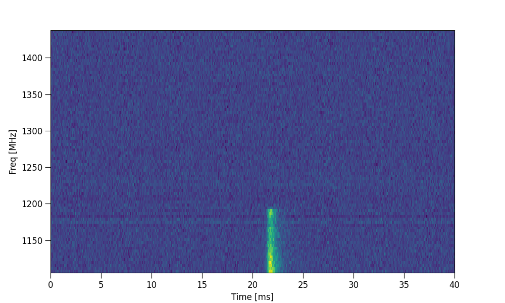
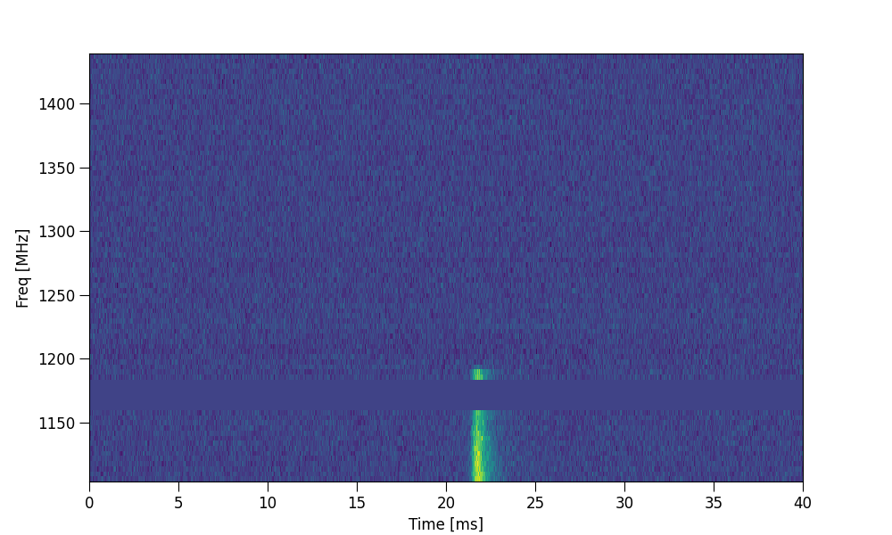

Tutorial 5: Channel zapping
This tutorial demonstrates how to flag/zap frequency channels in ILEX.
Channel zapping
When working with radio data, often the case there will be Radio Frequency Interference (RFI) that oversaturates the FRB signal in a given frequency channel/sub-band. Therefor it is important to (in most cases) ignore these channels i.e. zap them from the FRB.
First, lests load in our data using a .yaml file. Then plot the data
# imports
from ilex.frb import FRB
frb = FRB("examples/220610.yaml")
# lets plot the entire dataset
frb.set(t_crop = ["min", "max"], f_crop = ["min", "max"])
frb.plot_data("dsI")
{kind=link}

As you can see, there are some not so great RFI between 1150 and 1200 MHz, lets try and zap them. We can do so by
setting the zapchan parameter
frb.set(zapchan = "1160:1180")
frb.plot_data("dsI")
{kind=link}

Now that RFI has been flagged and will be ignored when doing subsequent analysis, such as plotting the frequency spectra,
fitting ect. (The zapchan parameter can also be set in the config file!)
zapchan
The zapchan parameter has a specific format that one must follow to properly zap channels. zapchan is a string that
specifies the range of frequencies (in MHz) that the user wishes to zap. For example, in the above example zapchan = 1160:1180
zapped all the channels between 1160 and 1180 MHz inclusive!. You can specify multiple frequency ranges to zap, which we seperate with
,
frb.set(zapchan = "1160:1180, 1250:1300")
You can also zap single channels
frb.set(zapchan = "1250")
# zap a single channel and a range of channels
frb.set(zapchan = "1160:1180, 1250")
NOTE: The zapchan string does not need to be in any particular order!.
The .zap_channels() method allows for more utility in zapping channels. The simplest use case is appending the current zapchan
string with additional frequency channels
frb.zap_channels("1250:1300")
you can also zap frequency channels that are close to zero by toggling zapzeros = True and specifying a tolerance threshold zapzerosmargin
frb.zap_channels(zapzeros = True, zapzerosmargin = 1e-5)
you can also reset any additional channel zapping that was added after loading in the FRB data
frb.zap_channels(resetzap = True)
The .zap_channels() method also provides an interactive mode that allows the user to zap channels using an interactive GUI
frb.zap_channels(interactive = True)

NOTE: The interactive zapping utility will automatically load in any prior zapping that has been applied.
Loading in data with prior zapping
If any data that is loaded in, already has zapping applied, ILEX will detect these channels and update zapchan accordingly. ILEX does this
by checking whiic frequency channels in the dynamic spectrum are set to np.nan.